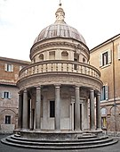

Trecerea de la stilul gotic la Renaștere a presupus adoptarea unor forme și principii estetice care au fost copiate din - și, într-o oarecare măsură, aspirau să reînvie - antichitatea romană. Romanicul și goticul mai recente ale Toscanei (actuala Italie) au avut și ele un rol. Acestea s-au dovedit a fi nu o regresie, ci treceri de la medieval la protomodern. Dezvoltările mai mari în structura și cultura societății florentine au făcut-o să simpatizeze o succesiune scurtă de proiecte arhitecturale la începutul anilor 1420. Filippo Brunelleschi (1377-1446), în timp ce lucra la cupola gotică a Catedralei din Florența, Santa Maria del Fiore (1296-1436), a introdus stilul renascentist în două lucrări mai mici, ambele la câteva sute de metri de catedrală și ambele începute în jurul anului 1421: Spitalul Inocenților și Bazilica Sfântul Laurențiu.
Spitalul Inocenților a fost primul orfelinat din Europa, comandat de o breaslă de mătase într-un moment în care caritatea devenea o practică obișnuită în societatea seculară, chiar dacă bogăția materială a Florenței începuse să scadă. Brunelleschi era probabil mai conștient de introducerea unui nou stil decât fusese Suger, așa-numitul inventator al goticului, cu trei secole mai devreme. Cu toate acestea, în ambele cazuri, toate componentele existau deja. Inovația reală constă în aranjamentele și combinațiile acestor elemente pentru crearea unui nou efect general. Fațada spitalului era simetrică cu nouă travee. Ritmul a fost stabilit de coloane, evidențiat de ferestrele cu frontoane (care corespund traveelor) și punctat de tondi (opere de artă rotunde). Ele au fost goale până la sfârșitul secolului al XV-lea, când Luca della Robbia le-a populat cu bebeluși înveliți, de teracotă. Cea mai proeminentă caracteristică e colonada cu arcele sale semicirculare. Ele erau de origine romană antică, la fel ca coloanele corintice și arhitrava proporțional corectă. Totuși, romanii nu ar fi sprijinit niște arce atât de mari pe niște coloane atât de subțiri, folosite în mod normal pentru interioare. Această formă antică a apărut pe vremea lui Brunelleschi, iar arhitectul a încorporat-o într-o colonadă orientată spre stradă. Rezultatul a fost o logie strălucitoare care exprimă dorința Renașterii de viață publică.
Bazilica Sfântul Laurențiu a fost inițial lipsită de ornamente. Pilaștrii canelați cu capiteluri corintice și tondi goale inițial inscripționate în pandantive au fost concepute nu ca înfrumusețări decorative, ci ca referințe arhitecturale. Brunelleschi s-a plâns de intervențiile ulterioare în sacristie, ale lui Donatello (circa 1386-1466) și ale altora, și cu un motiv întemeiat în unele cazuri: micile tondi de-a lungul frizei au slăbit efectul pe care-l avea pietra serena (gresie italiană) creat de albul pereților. Oricât ar putea imaginea mentală a lui Brunelleschi despre arhitectura să atragă sensibilitățile moderne, nu corespundea neapărat realităților antice; el a evocat-o de la vederea ruinelor în timpul călătoriei sale la Roma în 1402, unde frescele dispăruseră, interioarele fuseseră distruse, iar vopseaua sau aurul de pe fațade se degradase complet, fiind înlocuite de vegetație.
În ultimele decenii ale secolului al XV-lea, artiștii și arhitecții au început să viziteze Roma ca să studieze cu seriozitate ruinele. Au lăsat în urmă consemnări prețioase ale studiilor lor sub formă de desene. În timp ce interesul umanist față de Roma se dezvoltase de peste un secol (datând cel puțin de la Francesco Petrarca în secolul al XIV-lea), considerațiile anticare ale monumentelor s-au concentrat mai degrabă pe informațiile literare, epigrafice și istorice decât pe resturile fizice. Chiar dacă unii artiști și arhitecți, ca Filippo Brunelleschi (1377-1446), Donatello (circa 1386-1466) și Leon Battista Alberti (1404-1472), se pare că au studiat sculptura și ruinele romane, aproape nici o dovadă directă a acestei munci nu mai supraviețuiește. În anii 1480, arhitecți proeminenți, ca Francesco di Giorgio (1439-1502) și Giuliano da Sabgallo (circa 1445-1516), făceau numeroase studii asupra monumentelor antice, întreprinse în moduri care demonstrează că procesul de transformare a modelului într-o nouă concepție începuse deja. În multe cazuri, desenarea ruinelor în starea lor fragmentară a necesitat folosirea imaginației, așa cum Francesco însuși a recunoscut cu ușurință în adnotarea sa legată de reconstruirea Capitoliului, menționând „în mare parte imaginat de mine, pentru că se înțelege foarte puțin din ruine”.
Acest studiu intens a dat roade imediate, inspirând o serie de încercări din ce în ce mai îndrăznețe de a egala cu amploarea și ambiția operelor antice. Cea mai dramatică demonstrație a acestei noi atitudini față de antichitate - care nu viza doar imitația și emularea, ci rivalitatea - a avut loc în opera lui Donato Bramante (circa 1444-1514), un arhitect care s-a format pentru prima dată ca pictor în Milano.
Barocul și varianta sa târzie, rococoul, au fost primele stiluri cu adevărat globale în artă. Dominând mai mult de două secole de artă și arhitectură în Europa, America Latină și dincolo, de la circa 1580 până la circa 1800, au fost primele stiluri care s-au concentrat atât de intens pe impactului lor asupra privitorului, datorând o mare parte a popularității și scopului global acestei atracții vizuale. Născut în studiourile de pictură din Bologna și Roma în anii 1580 și 1590, și în atelierele sculpturale și arhitecturale din Roma deceniilor al doilea și al treilea ale secolului al XVII-lea, barocul s-a răspândit rapid în Italia, Spania și Portugalia, Flandra, Franța, Olanda, Anglia, Scandinavia și Rusia, precum și în centrele europene centrale și de est de la München (Germania) până la Vilnius (Lituania).
Arhitectura barocă a luat naștere în Roma secolului al XVII-lea, unde s-a dezvoltat ca o expresie a noii Bisericii Catolice triumfătoare. Contrareforma a afirmat că arhitectura, pictura și sculptura aveau să joace un rol important în transformarea Romei într-un oraș cu adevărat catolic. Străzile care radiau de la Bazilica Sfântul Petru au fost imediat presărate cu amintiri ale credinței victorioase. Rupând cu formulele intelectuale oarecum statice ale Renașterii, arhitectura barocă a fost în primul rând o artă a persuasiunii. Perioadele manierismului și barocului care l-au urmat au semnalat o anxietate crescătoare față de semnificație și reprezentare. Dezvoltări importante în știință și filozofie au separat reprezentări matematice ale realității de restul culturii, schimbând fundamental modul în care oamenii se leagă de lumea lor prin arhitectură.
Arhitecții baroci au luat elemente de bază ale arhitecturii renascentiste, inclusiv cupolele și colonadele, și le-au făcut mai înalte, mai mărețe, mai decorate și mai dramatice. Efectele interioare au fost adesea obținute cu folosirea de cvadratură sau a picturilor trompe-l'œil combinate cu sculptura: ochiul e atras în sus, fiind creată iluzia că cineva se uită în spre ceruri. Grupuri de îngeri sculptați și figuri pictate înghesuie tavanele. Lumina a fost folosită și pentru efecte dramatice; curgea din cupole și se reflectă dintr-o abundență de aurire. Coloanele salomone au fost folosite des, ca să dea o iluzie de mișcare în sus, alte elemente decorative ocupând fiecare spațiu disponibil. În palatele baroce, marile scări au devenit un element central.
Stilul rococo a fost în esență o mișcare decorativă care originează în Franța în aproximativ 1700, casele de oraș și în hôtelurile particuliere ale nobilimii pariziene, fiind în principal un stil de interioare. Chiar dacă stilul își are originea în bogata ornamentare a Palatului de la Versailles, a fost și o reacție la formalitatea palatului regal. Juste-Aurèle Meissonnier, Gilles-Marie Oppenordt, Nicolas Pineau și Germain Boffrand au fost printre designerii care au reușit să reflecte dimensiunea mai intimă și amenajarea confortabilă a camerelor, decorându-le cu scheme ușoare, frivole și în culori deschise, în care panourile și cadrele ușilor s-au dizolvat iar pereții s-au contopit cu tavanul. Repertoriul de motive, inclusiv arabescurile și chinoiseriile rocaille, a fost infinit de variate. Caracteristice stilului sunt motivele rocaille derivate din scoici (în principal), stalactite și grote. Arabescurile rocaille erau în mare parte forme abstracte, așezate simetric peste și în jurul cadrelor arhitecturale. Un motiv preferat a fost scoica cu volute, ale cărei volute sunt în formă de S și C, fiind combinată cu arabescuri în decorarea camerelor. În timp ce puține exterioare rococo au fost construite în Franța, o serie de biserici rococo se găsesc în sudul Germaniei. Alte motive de foarte folosite în artele decorative și arhitectura interioară includ: acanta și alte frunze, păsări, buchete de flori, fructe, elemente asociate cu iubirea (putti, tolbe cu săgeți, inimi străpunse), trofee, medalioane cu fețe, multe multe flori, și elemente din Orientul Îndepărtat (pagode, dragoni, maimuțe, flori bizare, și chinezi). De asemenea, designerii rococo au adorat oglinzile (cu cât mai multe cu atât mai bine), un exemplu fiind Sala Oglinzilor din Amalienburg (München, Germania), de Johann Baptist Zimmermann. În general, oglinzile sunt, de asemenea, prezente și deasupra șemineelor. Rococoul intern a abandonat tonul moral ridicat al barocului, alegoriile sale greoaie și obsesia sa pentru legitimitate: de fapt, formele sale abstracte și subiectele pastorale lipsite de griji, legate mai mult de noțiunile de refugiu și bucurie, care au creat o atmosferă mai iertătoare pentru conversațiile politicoase. Camerele rococo sunt de obicei mai mici decât omologele lor baroce, reflectând o mișcare spre intimitatea internă. Chiar și saloanele mai mari folosite pentru distracție erau mai modeste la scară, pentru că evenimentele sociale implicau un număr mai mic de invitați. Mai degrabă decât să servească drept lanțuri repetitive și mari de anfilade, camerele rococo erau frecvent aranjate în grupuri și luau forme și înfățișări din ce în ce mai specifice în funcție de funcție.
Stilul se caracterizează prin decoruri exuberante, cu o abundență de curbe, controcurbe, ondulații și elemente inspirate de natură. Exteriorul clădirilor rococo e de obicei simplu, în timp ce interioarele sunt în întregime dominate de ornamente. La fel ca barocul, și rococoul e extrem de teatral, conceput ca să impresioneze și să creeze admirație, de la prima vedere. Planurile de etaj ale bisericilor sunt deseori complexe, cu ovale interconectate. În palate, scările mari au devenit elemente centrale și au oferit diferite puncte de vedere ale decorului. Stilul a integrat adesea picturi, stucaturi, sculpturi de lemn și cvadraturi/picturi pe tavane iluzioniste, care au fost concepute astfel încât să dea impresia că cei care intră într-o cameră se uită spre cer, unde putti și alte figuri se uită la ei. Materialele folosite au includ stucul, pictat sau lăsat alb; combinații de lemn de diferite culori; lemn lăcuit în stilul japonez și ornamente de bronz aurit. Intenția a fost de a crea o impresie de surpriză, uimire și mirare la prima vedere.
La sfârșitul secolelor al XVII-lea și al XVIII-lea, operele și teoriile lui Andrea Palladio (din Veneția secolului al XVI-lea) aveau să fie din nou interpretate și adoptate în Anglia, răspândite prin traducerea în engleză a cărții I quattro libri dell'architettura, și a unor cărți cu modele ca Vitruvius Brittanicus de Colen Campbell. Această arhitectură paladiană și continuare a artei clasice urmau să-l influențeze la rândul lor pe Thomas Jefferson și pe alți arhitecți din Statele Unite în căutarea unei noi arhitecturi naționale.
Până la mijlocul secolului al XVIII-lea, a existat o ornamentare și o folosire mai restrânsă a formelor clasice autentice decât cea din baroc, informate de vizite sporite ale ruinelor clasice ca parte a Marelui Tur, împreună cu săpăturile din Pompei și Herculaneum. La mijlocul secolului al XVIII-lea, antichitatea a fost menținută ca un standard pentru arhitectură ca niciodată. Neoclasicismul a fost o investigație fundamentală a bazelor însăși ale formei și semnificației arhitecturale. În anii 1750, a început o alianță între explorarea arheologică și teoria arhitecturală, care a continuat în secolul al XIX-lea.
Trecerea la arhitectura neoclasică e datată în mod convențional în anii 1750. A câștigat mai întâi influență în Anglia și Franța; în Anglia, săpăturile lui Sir William Hamilton la Pompei și în alte situri, influența Marelui Tur și opera lui William Chambers și Robert Adam, au fost esențiale în acest sens. În Franța, mișcarea a fost propulsată de o generație de studenți francezi de artă instruiți la Roma, și a fost influențată de scrierile lui Johann Joachim Winckelmann.
Stilul a fost adoptat și de cercurile progresiste ale altor țări ca Suedia și Rusia. Arhitectura în stilul federal e numele arhitecturii clasiciste construită în America de Nord între circa 1780 și 1830, în special din 1785 până în 1815. Acest stil își împărtășește numele cu epoca sa, Perioada Federală. Termenul e, de asemenea, folosit în asociere cu designul de mobilă în Statele Unite al aceleiași perioade de timp. Stilul corespunde, în linii mari, clasicismului clasei de mijloc a stilului Biedermeier în țările vorbitoare de germană, stilului Regency în Marea Britanie și stilul francez Empire (pronunție [ampir]). În Europa Centrală și de Est, stilul e denumit de obicei clasicism (germană Klassizismus, rusă Классицизм).